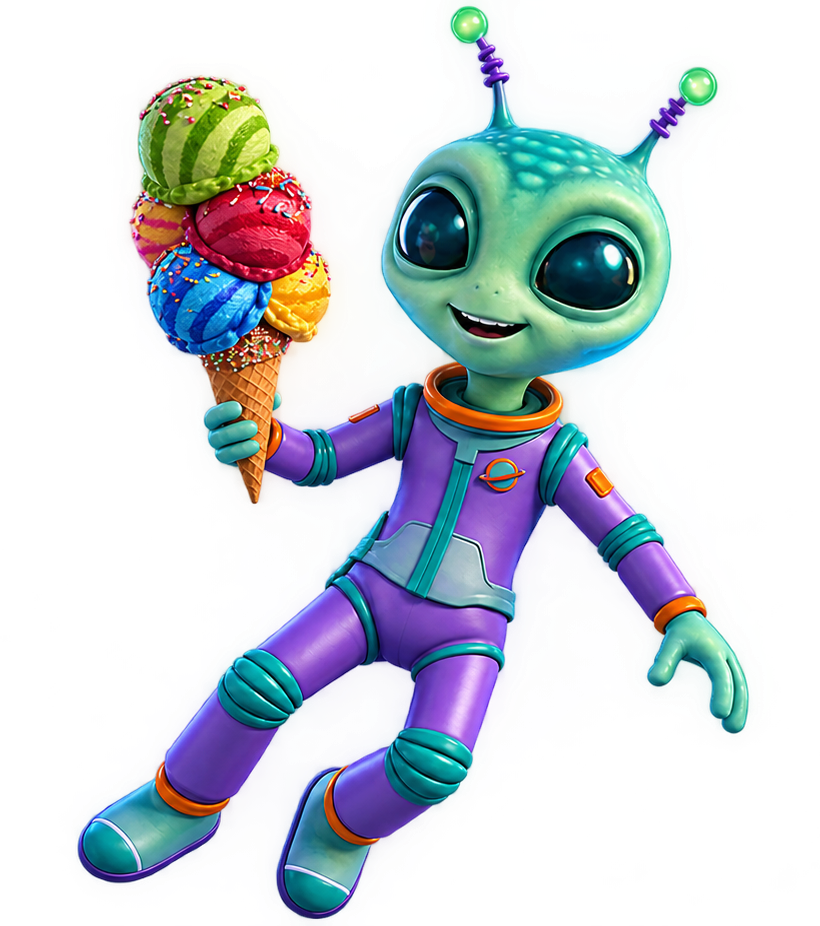

Pequeno por escolha
Preferimos jogos enxutos e bem-acabados a produções gigantes e inacabadas. Escala não é prioridade, experiência é.
A história, a missão e a forma como a Little Comet Studio dá vida aos seus jogos.
A Little Comet Studio nasceu de uma ideia simples: nem todo jogo precisa ser gigantesco para
deixar uma marca. Começamos como um pequeno grupo de desenvolvedores apaixonados por contar
histórias curtas, cheias de personalidade, em mundos que cabem no bolso mas parecem
enormes por dentro.
O nome do estúdio vem justamente disso: um cometa é pequeno perto das estrelas, mas deixa um
rastro que todo mundo enxerga. É essa a marca que queremos deixar com cada jogo que
lançamos.
Acreditamos em jogos independentes feitos com cuidado, curiosidade e um pouco de humor. Nosso objetivo não é competir em escala, e sim em identidade: criar experiências coloridas, imaginativas e memoráveis, que os jogadores lembrem muito depois de terminar.

Cada projeto da Little Comet Studio segue alguns princípios que guiam nossas decisões, do primeiro rascunho até o lançamento.
Preferimos jogos enxutos e bem-acabados a produções gigantes e inacabadas. Escala não é prioridade, experiência é.
Não nos prendemos a um único estilo. Já exploramos aventura, puzzle e plataforma — e pretendemos continuar experimentando.
Arte, trilha sonora e narrativa caminham juntas desde o início de cada projeto, assim cada jogo se torna único e reconhecível.
Preferimos lançar um jogo bem polido a lançar rápido. Cada título passa por várias rodadas de testes antes de chegar aos jogadores.
Conheça os jogos que nasceram dessa forma de pensar.
Explorar os jogosAcreditamos que jogos menores permitem mais foco em ideias específicas, com ciclos de desenvolvimento mais curtos e maior liberdade criativa.
Não. Gostamos de transitar entre gêneros diferentes, desde que a ideia tenha personalidade e caiba na proposta de um jogo enxuto.
Sim! Lumenfall é o nosso projeto atual em desenvolvimento, e novas ideias já estão sendo exploradas nos bastidores.